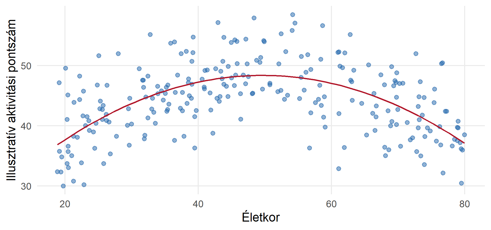
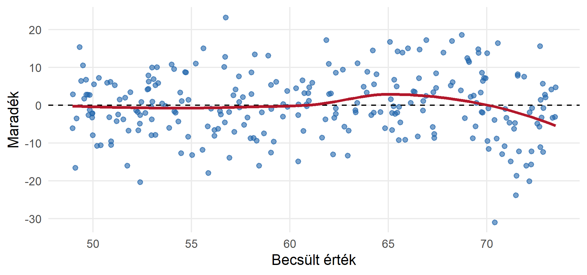
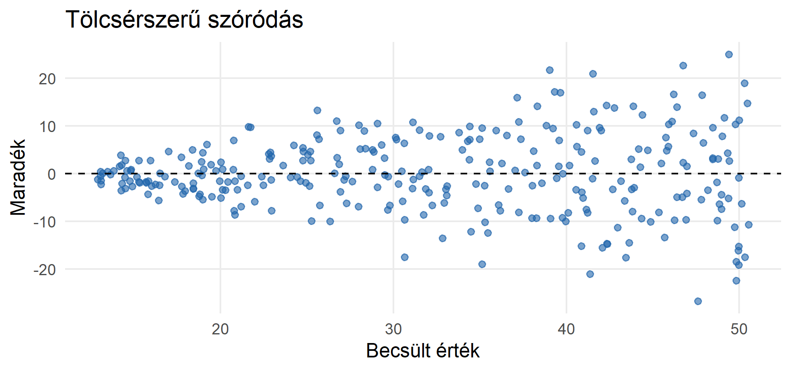
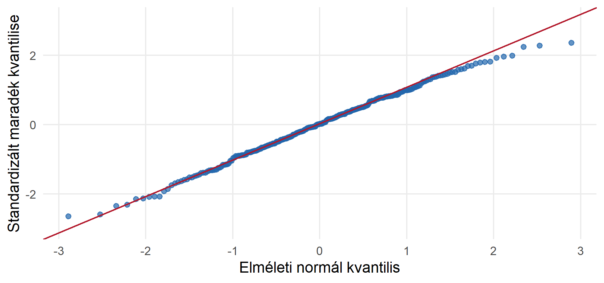
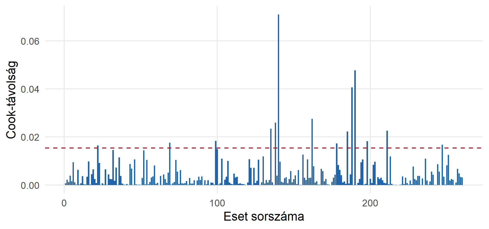
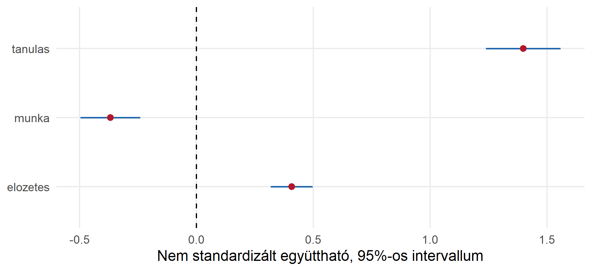

Statisztika 2. előadás
\[\widehat Y=b_0+b_1X+b_2X^2\]
Ez lineáris modell a paraméterekben, bár az \(X\)–\(Y\) kapcsolat görbe.
\[\frac{\partial\widehat Y}{\partial X}=b_1+2b_2X.\]
A kvadratikus tag mellett \(b_1\) önmagában nem az egész tartomány meredeksége.

| Modell | A meredekség értelmezése |
|---|---|
| \(Y=b_0+b_1\ln X\) | \(X\) kb. 1%-os növekedése kb. \(b_1/100\) egységnyi \(Y\)-változással jár |
| \(\ln Y=b_0+b_1X\) | Egy \(X\)-egységhez kb. \(100b_1\)%-os változás társul a modell szerinti geometriai szinten |
| \(\ln Y=b_0+b_1\ln X\) | \(b_1\) rugalmasság: 1%-os \(X\)-eltéréshez kb. \(b_1\)%-os eltérés társul |
A log-lineáris eset pontos arányos változása \(100(e^{b_1}-1)\)%. Log csak pozitív értékekre vehető; az eredeti skálára való átlag-előrejelzésnél az egyszerű exponenciálás torzíthat.
| Feltevés / követelmény | Jelentőség |
|---|---|
| Helyes feltételes átlag, \(E(\varepsilon\mid X)=0\) | A célzott paraméterek megfelelő becslése |
| Nincs tökéletes kollinearitás | Együtthatók azonosíthatósága |
| Független hibák / megfelelő mintaterv | Bizonytalanság helyes kezelése |
| Állandó hibavariancia | Klasszikus standard hibák és hatékonyság |
| Normális feltételes hibatagok | Kis mintás egzakt klasszikus próbák, normálalapú predikció |
Sem a prediktoroknak, sem a nyers kimenetnek nem kell normális eloszlásúnak lennie.
Diagnosztika + elmélet + mintaterv + érzékenységvizsgálat szükséges.

A görbe mintázat a feltételes átlag specifikációs problémájára utalhat. A nulla körüli maradékátlag önmagában nem elegendő.

Heteroszkedaszticitás esetén indokolt lehet heteroszkedaszticitás-robosztus (HC0-HC3: heteroscedasticity-consistent) standard hibát használni.

Nagy eltérések a széleken nehéz farkakra vagy kirívó esetekre utalhatnak. Nem a nyers \(Y\) normalitását vizsgáljuk.
Iskolák, háztartások, települések és országok szerint csoportosított esetek hibái összefügghetnek.
| Fogalom | Jelentés | Hüvelyjkujjszabály |
|---|---|---|
| Kiugró érték | Nagy maradék a várthoz képest | \(|\text{st.resid}|>2\) |
| Nagy hatóerejű érték | Prediktor átlagától való nagy eltérés, szokatlan prediktorérték vagy kombináció | \(h_i>\frac{2k+2}{n}\) |
| Torzító pont | Jelentősen módosítja az illesztést, ha kihagyjuk | Cook’s > 4/n, DFBeta > 4/n |

A 4/n vonal heurisztikus figyelmeztetés, nem automatikus törlési szabály.
Ne töröljön eseteket kizárólag azért, hogy jobb \(p\)-értéket vagy \(R^2\)-t kapjon.
Erősen együttjáró prediktoroknál nehezebb elkülöníteni az egyedi meredekségeket.
\[VIF_j=\frac{1}{1-R_j^2},\]
ahol \(R_j^2\) az \(X_j\) többi prediktorra történő regressziójából származik.
Hüvelykujjszabály: \(VIF>10\)
A közlésben szerepeljen az elemzett \(n\) és a hiánykezelés.
Az elemzés minősége az adatok és a kutatási terv minőségétől is függ.
| Kimenet / adathelyzet | Lehetséges továbblépés |
|---|---|
| Bináris esemény | Logisztikus regresszió |
| Esetszám / darabszám | Poisson vagy negatív binomiális modell |
| Sorrendi kimenet | Ordinális modell |
| Iskolákba / országokba ágyazott esetek | Többszintű modell / tervalapú következtetés |
| Eseményig eltelt idő | Túlélési modell |

A különböző mértékegységű együtthatók nagyságát ne kezelje automatikus fontossági rangsorként.
A szimulált mintán (260 eset) az előzetes tudás és a munkaidő figyelembevétele mellett egy további heti tanulási órához 1.40 ponttal magasabb becsült tesztpontszám társult (95%-os CI: 1.24–1.56). A modell R² értéke 0.62. Ez az eredmény feltételes kapcsolatot ír le, és önmagában nem igazolja a tanulási idő oksági hatását.
A közlés mindig nevezze meg a kontrollokat és a mértékegységeket.
Lineáris regresszió